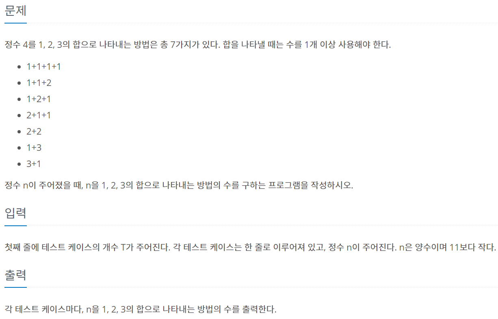
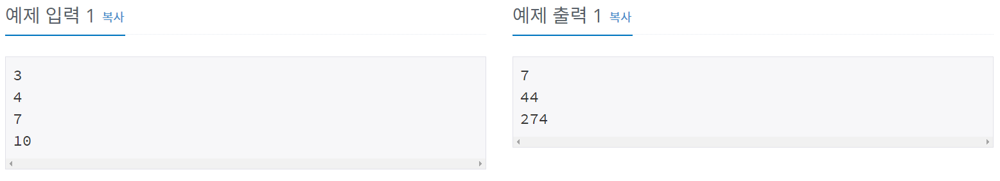
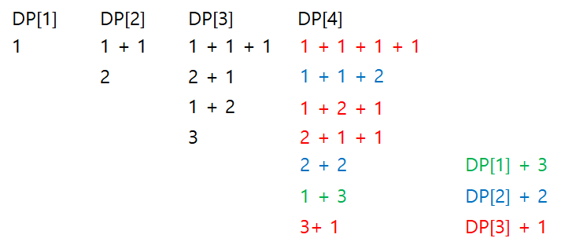
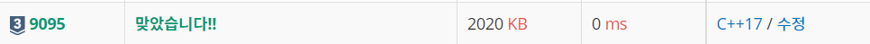

#INFO
난이도 : SILVER3
알고리즘 유형 : 다이나믹 프로그래밍 (DP)
∞ 문제 출처 : https://www.acmicpc.net/problem/9095
9095번: 1, 2, 3 더하기
각 테스트 케이스마다, n을 1, 2, 3의 합으로 나타내는 방법의 수를 출력한다.
www.acmicpc.net
 
#SOLVE
특정한 수 N을 1, 2, 3 을 이용해 만드는 방법은 다음과 같다.
[1] N - 1 + 1 (N-1을 1, 2, 3을 이용해 만들고 1을 더한다.)
[2] N - 2 + 2 (N-2를 1, 2, 3을 이용해 만들고 2를 더한다.)
[3] N - 3 + 3 (N-3을 1, 2, 3을 이용해 만들고 3을 더한다.)
위의 3가지 케이스를 모두 더하면 특정 수 N을 만드는 모든 방법을 구할 수 있다.
DP[4]를 예시로 실제로 그런지 확인해 보자. (여기서 DP[N]은 1, 2, 3을 이용해 N을 만드는 모든 방법의 수 이다.)

즉 이를 점화식으로 표현하면 DP[N] = DP[N-1] + DP[N-2] + DP[N-3] 이 된다.
#CODE
#include <iostream>
using namespace std;
int dp[11];
int main()
{
int T;
cin >> T;
//Init
dp[1] = 1;
dp[2] = 2;
dp[3] = 4;
//Solve
while(T--)
{
int n;
cin >> n;
for (int i = 4 ; i <= n ; i++)
{
dp[i] = dp[i-1] + dp[i-2] + dp[i-3];
}
cout << dp[n] << "\n";
}
return 0;
}